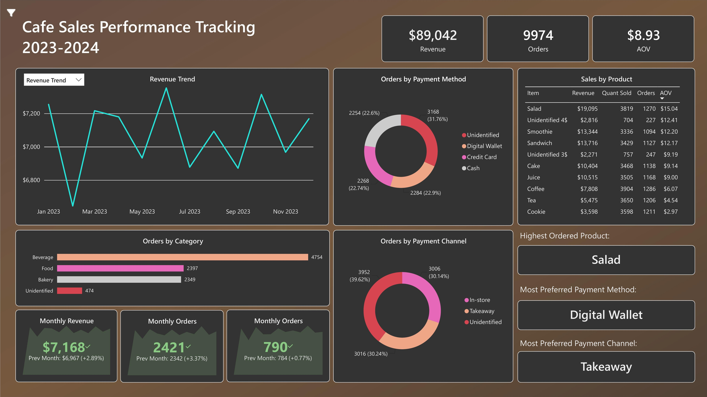

Cafe Sales Performance Analysis
Tools: MySQL (Data Profiling, Cleaning, & Modelling) · Power BI (Visualization)

Organizations generate large volumes of transactional data every day, but raw operational data is often inconsistent, incomplete, and unsuitable for analysis. To support reliable reporting and decision-making, this data must first be cleaned, standardized, and organized into a structured analytical model.
In this project, I built a mini end-to-end data warehouse pipeline using a dirty dataset, simulating how raw transactional data is transformed through raw, staging, and curated layers into a star schema designed for business intelligence. The final analytical model is then used to power an interactive Power BI dashboard for business reporting and decision-making.
The project includes:
- Data ingestion from raw CSV file
- SQL-based data cleaning and recovery
- A dimensional star schema data model
- A Power BI dashboard for analytics and insights
The Dataset
The dataset used in this project is the Dirty Cafe Sales Dataset, publicly available on Kaggle.
Dataset link:
"https://www.kaggle.com/datasets/ahmedmohamed2003/cafe-sales-dirty-data-for-cleaning-training/data"
The dataset contains 10,000 synthetic point-of-sale transactions from a cafe, designed to simulate day-to-day sales activity. It consists of a single transactional table with eight columns covering products, quantities, prices, payment methods, locations, and transaction dates. Because the data intentionally includes missing values, inconsistencies, and invalid records, it is well suited for practicing data cleaning, data quality management, and building analytical data pipelines.
Project Architecture
The project follows a typical data warehouse architecture with the following layers:
- Raw Layer: original transactional data imported from the source.
- Staging Layer: data profiled, cleaned, and transformed to improve quality and consistency.
- Data Warehouse Layer: data modeled into a star schema, focused on the analytical needs of a specific business area or department
- Consumption Layer: interactive dashboards and reports for business users.
A. Raw Layer
This layer contains the original transactional data imported from the source systems. The data is stored in its raw format without any transformations.
-- Import the File: dirty_cafe_sales.csv and rename it into raw_data
-- I imported the file through GUI
ALTER TABLE dirty_cafe_sales
RENAME TO raw_data;
-- Brief exploration on raw data
DESC raw_data;
SELECT * FROM raw_data;
SELECT COUNT(*) AS total_records
FROM raw_data;
Source: Scripts/01_initialization.sql
B. Staging Layer
The staging layer transforms raw data into a clean, analysis-ready dataset. A staging table was created as a copy of the raw data, then each column was profiled, cleaned, and repopulated where possible. Records that still couldn't be recovered were isolated and flagged instead of being deleted.
Data quality checking and cleaning
This step identifies and resolves data quality issues within the staging table, ensuring each column follows a consistent format and type before further processing.
In this step, I performed the following key actions:
- Column standardization
- Duplicate check
- Format inconsistency check
- Data type conversion
- Missing value recovery
- Invalid data isolation
Example of quality checking and cleaning step: price_per_unit column:
-- Standardize Column Names
ALTER TABLE staging_data
RENAME COLUMN `Price Per Unit` TO price_per_unit;
-- Check for Format Inconsistencies
SELECT DISTINCT price_per_unit FROM staging_data;
-- Finding: no formatting issues, but blank, UNKNOWN, and ERROR values were present
UPDATE staging_data
SET price_per_unit = CASE
WHEN price_per_unit IN ('', 'UNKNOWN', 'ERROR') THEN NULL
ELSE price_per_unit
END;
-- Data Type Conversion
ALTER TABLE staging_data
MODIFY price_per_unit DECIMAL(10,2);
-- Repopulate Missing Values based on its item
-- (each item maps to a unique price_per_unit)
UPDATE staging_data
SET price_per_unit = CASE item
WHEN 'Cookie' THEN 1
WHEN 'Tea' THEN 1.5
WHEN 'Coffee' THEN 2
WHEN 'Salad' THEN 5
END
WHERE price_per_unit IS NULL;
-- Repopulate remaining values using quantity and total_spent
UPDATE staging_data
SET price_per_unit = (total_spent / quantity)
WHERE price_per_unit IS NULL;
-- Isolate Invalid Records that still couldn't be recovered
INSERT invalid_data
SELECT * FROM staging_data
WHERE price_per_unit IS NULL;
DELETE FROM staging_data
WHERE price_per_unit IS NULL;Source: Scripts/02_data_cleaning.sql
Invalid Data Flagging
After invalid records were isolated into the invalid_data table, each one was flagged using a boolean column per attribute, marking exactly which field caused it to be invalid.
-- add invalid flag column for each column in invalid_data table
ALTER TABLE invalid_data
ADD COLUMN invalid_item BOOLEAN NOT NULL DEFAULT FALSE ,
ADD COLUMN invalid_quantity BOOLEAN NOT NULL DEFAULT FALSE ,
ADD COLUMN invalid_price_per_unit BOOLEAN NOT NULL DEFAULT FALSE,
ADD COLUMN invalid_total_spent BOOLEAN NOT NULL DEFAULT FALSE,
ADD COLUMN invalid_payment_method BOOLEAN NOT NULL DEFAULT FALSE,
ADD COLUMN invalid_location BOOLEAN NOT NULL DEFAULT FALSE,
ADD COLUMN invalid_transaction_date BOOLEAN NOT NULL DEFAULT FALSE;
-- Populate invalid flags
UPDATE invalid_data
SET
invalid_item = item IS NULL,
invalid_quantity = quantity IS NULL,
invalid_price_per_unit = price_per_unit IS NULL,
invalid_total_spent = total_spent IS NULL,
invalid_payment_method = payment_method IS NULL,
invalid_location = location IS NULL,
invalid_transaction_date = transaction_date IS NULL;
SELECT * FROM invalid_data;
-- Complete the quantiative fields
-- Fill quantity
UPDATE invalid_data
SET quantity = total_spent / price_per_unit
WHERE quantity IS NULL
AND total_spent IS NOT NULL
AND price_per_unit IS NOT NULL;
-- Fill price_per_unit
UPDATE invalid_data
SET price_per_unit = total_spent / quantity
WHERE price_per_unit IS NULL
AND total_spent IS NOT NULL
AND quantity IS NOT NULL;
-- Fill total_spent
UPDATE invalid_data
SET total_spent = quantity * price_per_unit
WHERE total_spent IS NULL
AND quantity IS NOT NULL
AND price_per_unit IS NOT NULL;Source: Scripts/03_invalid_data_flagging.sql
C. Data Warehouse Layer
After cleaning the data, the next step is building the data mart layer. This layer uses a star schema, which is commonly used in analytical systems because it simplifies joins and improves query performance.
The warehouse consists of:
Dimension Tables
dim_productdim_paymentdim_channeldim_categorydim_calendar
Fact Table
fact_sales
The fact table stores measurable events, with one row per transaction, while dimension tables store descriptive attributes such as product, payment method, and channel.
-- Example: dimension table
CREATE TABLE dim_product(
product_id INT PRIMARY KEY AUTO_INCREMENT,
item VARCHAR(50) UNIQUE NOT NULL,
price DECIMAL(10,2)
);
INSERT INTO dim_product (item, price)
SELECT DISTINCT item, price_per_unit
FROM clean_data
ORDER BY item;
-- Fact table, linked to each dimension via foreign keys
CREATE TABLE fact_sales (
transaction_id VARCHAR(20) PRIMARY KEY,
product_id INT NOT NULL,
payment_id INT NOT NULL,
channel_id INT NOT NULL,
transaction_date DATE,
quantity SMALLINT UNSIGNED NOT NULL,
FOREIGN KEY (product_id) REFERENCES dim_product(product_id),
FOREIGN KEY (payment_id) REFERENCES dim_payment(payment_id),
FOREIGN KEY (channel_id) REFERENCES dim_channel(channel_id),
FOREIGN KEY (transaction_date) REFERENCES dim_calendar(calendar_date)
);
INSERT INTO fact_sales (transaction_id, product_id, payment_id, channel_id, transaction_date, quantity)
SELECT
cd.transaction_id,
dp.product_id,
dp2.payment_id,
dc.channel_id,
cd.transaction_date,
cd.quantity
FROM
clean_data cd
LEFT JOIN dim_product dp ON
cd.item = dp.item
LEFT JOIN dim_payment dp2 ON
cd.payment_method = dp2.payment_method
LEFT JOIN dim_channel dc ON
cd.location = dc.channel;Source: Scripts/04_data_modelling.sql
Records that couldn't be fully identified during cleaning, but still had complete quantity and price data, were reintegrated into the fact table under an "Unidentified" category, flagged per dimension. This allowed them to still contribute to revenue and order metrics, instead of being excluded from reporting entirely.
-- Add an "Unidentified" entry to each dimension table
INSERT INTO dim_category (category_id, category)
VALUES (-1, "Unidentified");
INSERT INTO dim_product (product_id, category_id, item, price)
VALUES (-1, -1, "Unidentified 3$", 3), (-2, -1, "Unidentified 4$", 4);
INSERT INTO dim_payment (payment_id, payment_method)
VALUES (-1, "Unidentified");
INSERT INTO dim_channel (channel_id, channel)
VALUES (-1, "Unidentified");
-- Add flag columns to fact_sales
ALTER TABLE fact_sales
ADD COLUMN invalid_product BOOLEAN NOT NULL DEFAULT FALSE,
ADD COLUMN invalid_payment_method BOOLEAN NOT NULL DEFAULT FALSE,
ADD COLUMN invalid_channel BOOLEAN NOT NULL DEFAULT FALSE;
-- Reintegrate partially-recoverable records into fact_sales
INSERT INTO fact_sales (transaction_id, product_id, payment_id, channel_id, quantity, invalid_product)
SELECT
qid.transaction_id,
CASE
WHEN qid.item = "Unidentified 3$" THEN -1
WHEN qid.item = "Unidentified 4$" THEN -2
ELSE dp.product_id
END,
COALESCE(dp2.payment_id, -1),
COALESCE(dc.channel_id, -1),
qid.quantity,
qid.invalid_item
FROM quantifiable_invalid_data qid
LEFT JOIN dim_product dp ON qid.item = dp.item
LEFT JOIN dim_payment dp2 ON qid.payment_method = dp2.payment_method
LEFT JOIN dim_channel dc ON qid.location = dc.channel;Source: Scripts/05_include_invalid_quant_data.sql
D. Consumption Layer
The final layer connects the star schema to Power BI, turning the data model into an interactive dashboard for business reporting and decision-making.
The dashboard covers:
- Total revenue, orders, and average order value (AOV)
- Monthly order trends
- Breakdown by category, payment method, and sales channel
- A toggle to switch between full data and clean-data-only views
Key insights:
- Salad was the highest-ordered product
- Digital Wallet was the most preferred payment method
- Takeaway was the most preferred sales channel
View the Full Project
The complete project, including all SQL scripts and the Power BI file, is available on GitHub.